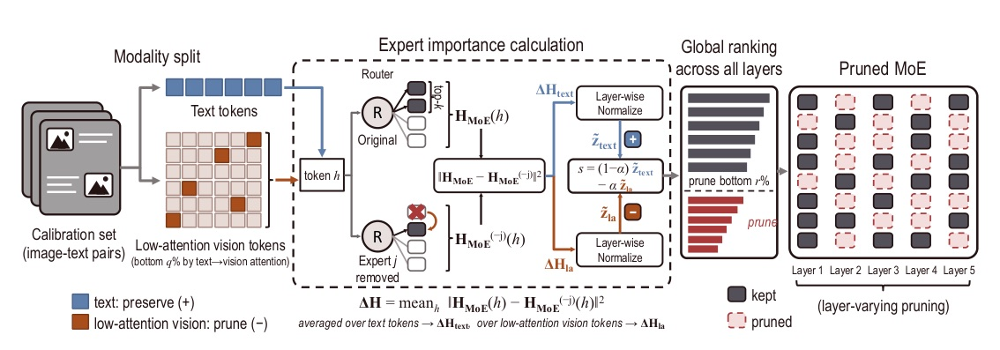
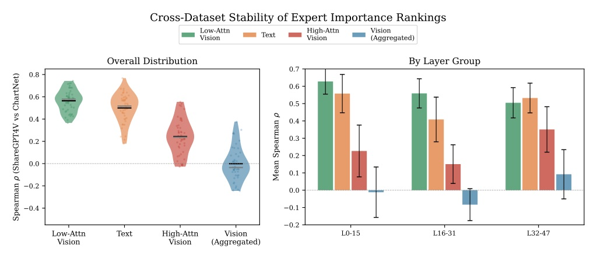

論文：Modality-Aware Expert Pruning for MoE-Based Multimodal Large Language Models · arXiv 2611.05927 · 程式碼 github.com/nota-github/MAEP
MoE-MLLM 的 expert 佔模型 93–94%，卻全部得常駐記憶體。MAEP 發現同一個 expert 對文字與視覺 token 的角色不同，於是用 ΔH 分別評分：text 高 → 保留、低注意力 vision 高 → 剪除。50% expert 剪除、三個模型平均保留率 91.2 / 88.3 / 86.7%，皆優於 REAP 與 HC-SMoE。
只需小型校準集（預設 1K ShareGPT4V），一次 forward、無梯度、無權重更新（§1, p.2；§5, p.4）。


| 模型 | 剪除比例 | HC-SMoE | REAP | MAEP |
|---|---|---|---|---|
| InternVL3.5 | 25% | 91.9 | 95.9 | 97.7 |
| InternVL3.5 | 50% | 74.1 | 88.5 | 91.2 |
| Qwen3-VL | 25% | 96.0 | 94.8 | 96.6 |
| Qwen3-VL | 50% | 85.5 | 86.6 | 88.3 |
| Gemma4 | 25% | 77.2 | 96.0 | 96.0 |
| Gemma4 | 50% | 39.3 | 80.9 | 86.7 |
| InternVL3.5 50% | ChartQA | MME | MMLU-Redux | IFEval |
|---|---|---|---|---|
| 未剪枝 | 87.3 | 2442.2 | 80.9 | 78.9 |
| REAP | 65.3 | 2109.6 | 53.9 | 66.4 |
| MAEP | 76.7 | 2160.3 | 59.8 | 64.9 |
| InternVL3.5 · 50% | MME | MMStar | ChartQA | TextVQA |
|---|---|---|---|---|
| Default (MAEP) | 2160 | 63.3 | 76.7 | 75.6 |
| w/o modality split | 2034 | 51.1 | 41.2 | 66.0 |
| w/ high-attn top 20% | 2226 | 55.5 | 54.5 | 76.1 |
| w/ full vision | 2152 | 48.3 | 38.8 | 66.9 |
| uniform per-layer (α=0.5) | 2104 | 62.2 | 72.1 | 76.5 |
Text-side importance serves as a preservation signal while vision-side importance serves as a pruning signal, and experts are ranked globally across layers.
文字端的重要性當作保留訊號，視覺端的重要性當作剪除訊號，並跨層做全域排名。Abstract, p.1
Existing MoE-MLLM efficiency methods mainly reduce inference-time computation through expert skipping or visual-token pruning; the expert parameters themselves, however, persist in GPU memory.
現有 MoE-MLLM 效率方法主要透過 expert skipping 或 visual token pruning 降低推論計算；但expert 參數本身仍留在 GPU 記憶體中。§2.2, p.3
By contrast, low-attention vision tokens (bottom q-th percentile of text-to-vision attention) yield the most stable expert importance rankings across calibration datasets.
相反地，低注意力 vision token（text→vision attention 最低的 q 百分位）在不同校準資料集之間給出最穩定的 expert 重要性排名。§4.2, p.4
This experiment therefore does not isolate interaction effects ... ∆H re-measured after partial pruning no longer reflects the original model's redundancy structure.
因此這個實驗並未隔離交互作用……部分剪除後重新量測的 ΔH不再反映原模型的冗餘結構。Appendix A, p.15
來源：arXiv 2611.05927 · NeurIPS 2026 · github.com/nota-github/MAEP